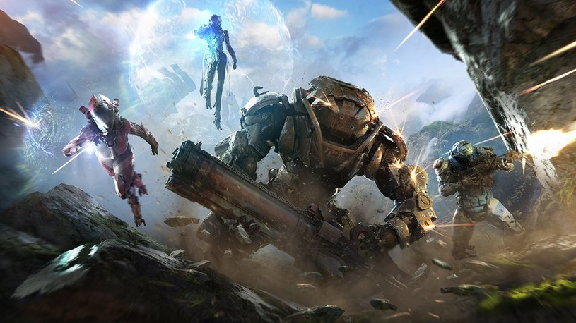
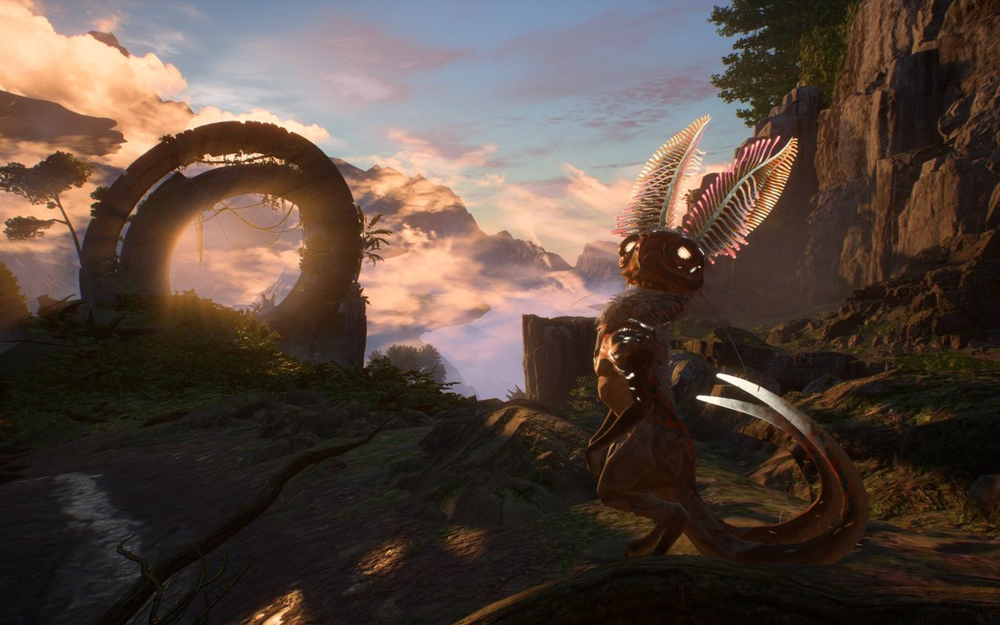
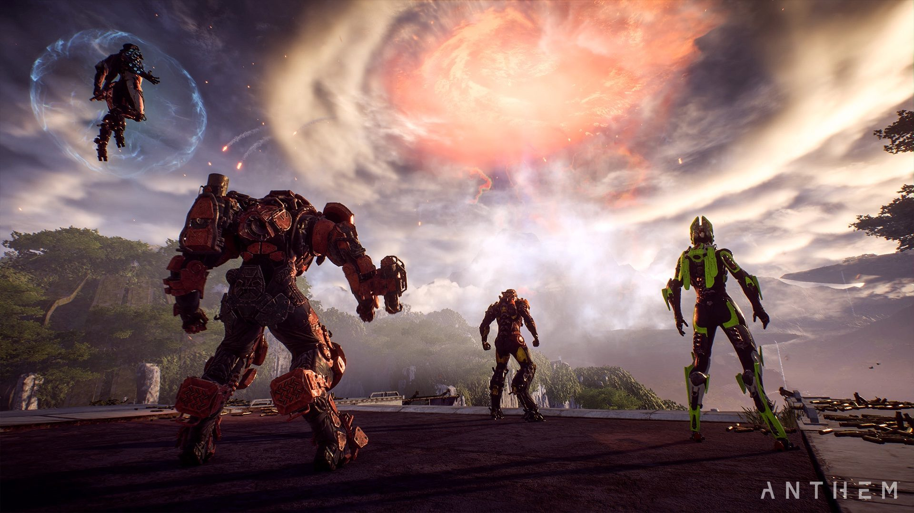
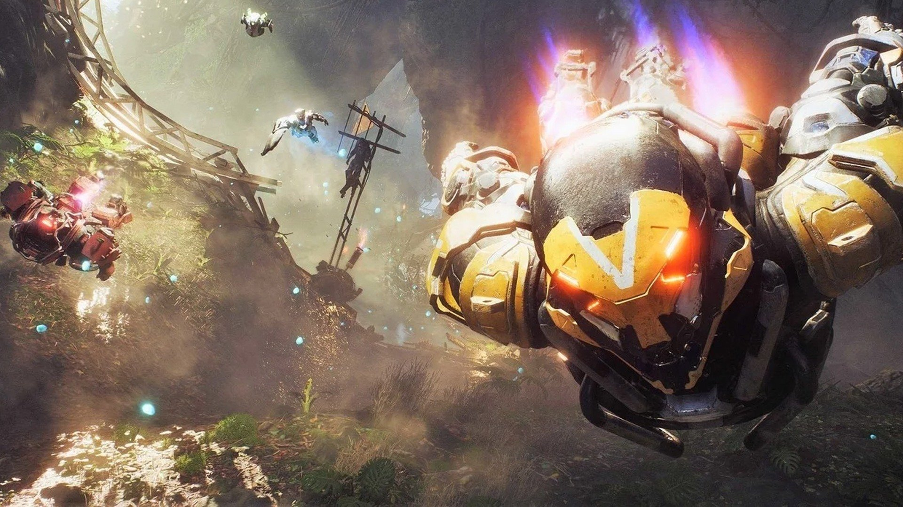
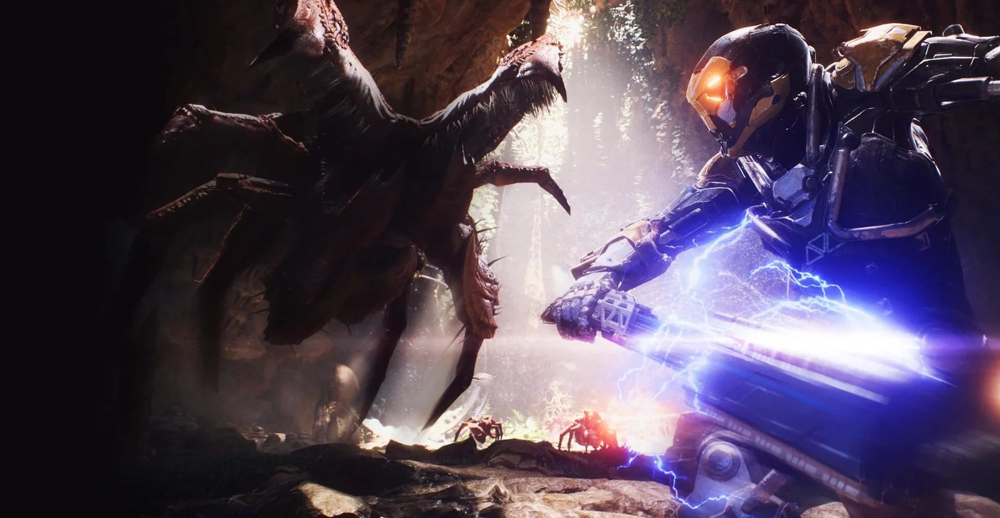

Anthem - это постапокалиптическая фантастическая игра от BioWare. Игрокам предстоит исследовать многообразный постапокалиптический мир в роли так называемых "фрилансеров" - бойцов, которые облачены в мощную броню, и которые занимаются спасением человечества от внешних угроз - таких, как атаки монстров и пришельцев из иного мира.
Согласно сюжету игры, изначально мир создали боги, обуздавшие так называемый Гимн - источник творения. Однако после того как мир появился, они не стали его доделывать и ушли, бросив мир незаконченным. Гимн вырвался на свободу, и по миру прокатилась волна катаклизмов, с последствиями которых и предстоит столкнуться героям игры - Фрилансерам, опытным пилотам Джавелинов, которые решили изменить существующий порядок вещей.

Геймплей
В этом открытом мире, отряды до четырёх игроков отправляются в экспедиции за пределами крепости Форт-Тарсис, чтобы встретить и обнаружить множество скрытых тайн и непредвиденных опасностей которые таятся за её пределами.
С помощью экзокостюма Джавелин, фрилансеры могут исследовать неизведанные места с воздуха, на земле и под водой, причём каждый костюм уникален, содержащий собственный стиль и боевую роль. Изучая внешний мир, фрилансеры могут участвовать в крупномасштабных мировых событиях, таких как Shaper Storms (Бури Перемен), или сталкиваться с непредвиденными опасностями, такими как дикие звери и безжалостные мародёры.
Форт-Тарсис выступает в качестве игровой базы, где фрилансеры могут взаимодействовать друг с другом, модернизировать своё оборудование и принимать новые квесты. В форте игрок может переключаться на режим от первого лица, однако сражения за пределами стены ведутся исключительно от третьего лица.
Разработка
Первоначально Anthem был проектом, зарегистрированным под кодовым названием «Dylan», в BioWare заявили, что они стремились создать «Боба Дилана в видеоиграх — который будет существовать долгие годы». 10 июня 2017 года официальный тизер для игры был выпущен во время пресс-конференции EA до E3 EA Play. На следующий день в E3 2017 был продемонстрирован предварительный геймплей с режимом поддержкой-4K, играемая в реальном времени на Xbox One X.
Генеральный менеджер BioWare, Аарон Флинн, в интервью CBC Radio рассказал, что студия была нацелена на создание мира научной фантастики как у Марвел и в Звёздных войнах
Первый тизер игры состоялся на пресс-конференции Electonic Arts в рамках E3 2014[1]. Игра под названием Anthem была официально анонсирована на пресс-конференции Electronic Arts EA Play 2017 в рамках E3 2017. На следующий день на пресс-конференции Microsoft был впервые показан геймплей игры с новой консоли Xbox One X[2].
25 января 2018 года, прошла информация о переносе игры с установленного релиза — на 2019 год. 1 июня 2018 года, до выставки E3 2018, BioWare выпустила два мини тизер-трейлера игры, а также геймплей. Дата выхода 22 февраля 2019 года.
На выставке PAX West 2018 BioWare провели конференцию, где ответили на вопросы об игре и представили концепцию «Наш мир. Моя история». Из неё стало ясно, что геймплей разделён на две части: за пределами Форт-Тарсиса игрок исследует мир, выполняет задания, которые погружают его в мир игры и участвует в, так называемых, «Мировых событиях», это «Наш мир». После этого игрок возвращается в форт, где повествование ведётся строго от первого лица. Здесь игрок может взаимодействовать с персонажами, принимать решения, влияющие на мир «Anthem» и, конечно, получать квесты от фракций и «агентов», каждый из которых является персонажем с полностью прописанной историей, выполняя их задания вы будете лучше узнавать их и мир игры в целом, это «Моя история».
Как выяснилось позже, разработка Anthem была сопряжена с огромным трудностями, включая проблемы с менеджментом, внутренним движком и прочими проблемами, серьёзно повлиявшие на вид игры. Kotaku провело расследование на эту тему и вскрыло множество фактов.[3] Одной из наиболее крупных проблем называют отсутствие технической поддержки со стороны Electronic Arts по движку Frostbite.